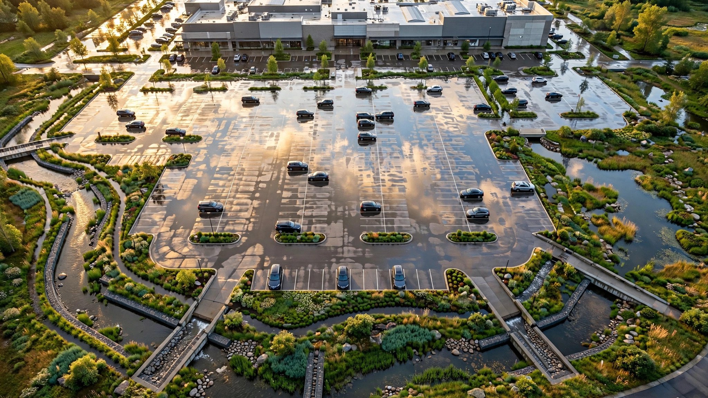

Stormwater Fee Credit Optimization SaaS for Multi-Property Commercial Portfolios
Over 2,000 U.S. municipalities charge stormwater utility fees based on impervious surface area, and virtually all of them offer credits of 20 to 80 percent for on-site green infrastructure. The credit application process is different in every jurisdiction: different forms, different qualifying BMPs, different inspection schedules, different renewal deadlines. A commercial REIT with 200 properties across 40 municipalities is leaving six figures a year on the table because nobody on the property management team has the bandwidth to track 40 different credit programs, file 200 different applications, and maintain documentation for 200 different renewal cycles.

The Problem
Every time it rains on a parking lot, the water runs off. It carries motor oil, brake dust, fertilizer residue, and deicing salt into storm drains that empty into local waterways without treatment. Since the Clean Water Act's Phase II stormwater regulations expanded in 1999, municipalities have been building out stormwater management infrastructure to handle this runoff, and they need money to pay for it. The funding mechanism that has won out across the country is the stormwater utility fee: a dedicated charge on every property based on how much impervious surface it has. Rooftops, parking lots, driveways, sidewalks. If water can't soak through it, you pay for the runoff it generates.
The number of municipalities charging these fees has exploded. A Clemson University analysis counted 2,057 stormwater utilities across the United States as of 2022, a 200 percent increase from the 635 that existed in 2007. The NRDC estimates 1,800 to 2,000 nationwide. New ones are forming constantly. Savannah, Georgia began billing its stormwater utility fee in September 2026, charging non-residential properties $4.75 per equivalent residential unit per month. Arlington, Virginia launched its program after an extensive public engagement process in 2023. The trajectory is clear: more cities every year, higher fees as infrastructure costs climb.
For a single-family homeowner, the stormwater fee is a few dollars a month. Annoying but negligible. For a commercial property owner, the math is radically different. A 10-acre shopping center with 70 percent impervious coverage in Ann Arbor, Michigan pays $1,025.85 per acre of impervious surface per quarter, or $28,724 per year. A 70,000-square-foot commercial property in Philadelphia pays $591 per month, or $7,096 per year. A warehouse district in Fort Worth pays $7.29 per ERU per month, and a single acre of asphalt generates 17 ERUs, costing $1,487 per year. Scale that across a portfolio. A REIT managing 300 commercial properties across 50 municipalities pays aggregate stormwater fees of $500,000 to $2 million per year, depending on geography and impervious coverage.
Here is what almost none of those property owners know: virtually every municipality that charges a stormwater fee also offers credits for reducing the stormwater impact of your property. Install a rain garden, and Gaithersburg, Maryland will cut your fee up to 50 percent. Build a bioretention cell, and La Crosse, Wisconsin offers up to 80 percent. Maintain a retention pond, and Gwinnett County, Georgia provides up to 40 percent. Philadelphia's program can credit up to 100 percent of your gross area and impervious area charges. Seattle caps credits at 50 percent. Credits typically expire every four years and require renewal with maintenance documentation. The application process involves different forms, different eligible BMPs (best management practices), different calculation methodologies, and different deadlines in every single jurisdiction.
The result is predictable: almost nobody claims them. The credit programs exist on municipal websites, buried in PDF manuals that run 30 to 80 pages. A commercial property owner managing sites in Philadelphia, Fort Worth, Raleigh, and Seattle would need to navigate four completely different credit systems, with four different application forms, four different BMP eligibility lists, four different inspection requirements, and four different renewal cycles. The property manager who might do this has 47 other line items to manage. The stormwater fee is paid automatically through the utility bill, and nobody ever asks whether it could be 40 percent lower.
Market Size
TAM calculation: An estimated 5.6 million commercial properties exist in the United States (CBRE, CoStar). Approximately 2,057 municipalities charge stormwater utility fees (Clemson/Campbell, 2022), concentrated in urbanized areas with the highest commercial property density. We estimate 1.2 to 1.8 million commercial, institutional, and multifamily properties fall within stormwater utility service areas. At an average commercial stormwater fee of $2,400 per property per year (weighted toward larger urban municipalities with higher rates and larger properties), the total annual stormwater fee pool for commercial properties is approximately $2.9 to $4.3 billion. With average available credits of 35 percent (the midpoint of the 20 to 50 percent range most jurisdictions offer), the total unclaimed credit pool is $1.0 to $1.5 billion per year.
The addressable market for a credit optimization SaaS product targets three segments. First, multi-property commercial portfolios: REITs, private equity real estate funds, institutional property managers, and large landlords managing 20 to 5,000 properties across multiple jurisdictions. The National Association of Real Estate Investment Trusts lists 225 publicly traded REITs, and an estimated 2,000 to 3,000 institutional property management firms operate portfolios of 50 or more commercial properties. At a subscription price of $149 per property per month for a full-service credit optimization platform (credit identification, application preparation, documentation management, renewal tracking, and savings reporting), and a realistic penetration of 800 portfolio accounts managing an average of 120 properties each in Year 3, the portfolio segment generates $17.2 million in ARR.
Second, mid-market commercial property owners (5 to 50 properties): an estimated 15,000 to 25,000 firms. At $79 per property per month for a self-service credit intelligence tier, with 2,500 accounts managing 15 properties each in Year 3, this segment adds $3.6 million. Third, municipalities themselves: the 2,057 stormwater utilities could license a white-label version of the credit calculator and application portal to increase credit program participation (which helps them meet MS4 permit obligations for green infrastructure adoption). At $12,000 per year for 150 municipal accounts in Year 3, this adds $1.8 million. Total Year 3 ARR target: $22.6 million.
The Product
A credit optimization platform that sits between commercial property owners and the patchwork of 2,000-plus municipal stormwater credit programs, automating the identification, application, documentation, and renewal of credits across every property in a portfolio. Core modules:
- Portfolio stormwater fee audit: Connect a property portfolio by uploading addresses. The platform cross-references each property against its municipality's stormwater utility, calculates the current fee based on impervious surface area (derived from satellite imagery and municipal GIS data), identifies the applicable credit program, and estimates the available credit based on existing on-site BMPs. The output: a portfolio-wide savings estimate with a property-by-property breakdown showing current annual fee, available credit percentage, estimated annual savings, and the specific BMPs that qualify. Many commercial properties already have retention ponds, bioswales, or permeable pavement installed for site development compliance but have never filed for stormwater fee credits because the development engineer's scope ended at certificate of occupancy. The platform catches these "already-qualifying" properties first, because the savings require no capital expenditure, only an application
- Credit program rules engine: A structured database of credit programs across all 2,057 stormwater utility jurisdictions. For each jurisdiction: eligible BMP types, credit percentages by BMP category, maximum total credit, application forms and required documentation, inspection requirements, renewal periods, and deadlines. This is the core moat. Building this database is tedious, jurisdiction-by-jurisdiction work that no competitor will replicate casually. The data comes from municipal ordinances, credit manuals (typically PDFs posted on city websites), and direct outreach to stormwater utility administrators. Once built, maintenance is incremental: municipalities update their credit programs infrequently, and monitoring for changes is automatable
- Application automation: For each eligible property, the platform generates the jurisdiction-specific credit application. It pre-fills property data, attaches required documentation (site plans, BMP specifications, maintenance logs, photographs), and routes the application through the property manager's approval workflow before submission. Where jurisdictions accept electronic applications, submission is automated. Where paper applications are required, the platform generates print-ready PDFs with instructions
- Green infrastructure ROI calculator: For properties that do not currently have qualifying BMPs, the platform models the ROI of installing green infrastructure specifically to reduce stormwater fees. If a 5-acre retail property in Raleigh pays $8.47 per SFEU per month and a rain garden covering 2,000 square feet would earn a 30 percent credit, the annual savings is $1,067. If the rain garden costs $8,000 to install, the payback is 7.5 years with no maintenance costs included, or 10.2 years with $300 per year in maintenance. The calculator shows payback period, NPV, and IRR for each BMP option at each property, allowing portfolio managers to rank capital expenditure priorities by stormwater ROI
- Renewal and compliance tracker: Credits expire. Philadelphia's expire every four years. Other jurisdictions use three-year or five-year cycles. Many require annual maintenance documentation and periodic inspections. The platform tracks every credit's expiration date, sends renewal reminders 90 days in advance, pre-populates renewal applications with updated documentation, and flags properties where inspection records or maintenance logs are missing. A single lapsed renewal on a large commercial property can mean $3,000 to $12,000 in forfeited annual savings that nobody notices because the fee simply reverts to the uncredited rate on the next utility bill
Unit Economics
| Metric | Value |
|---|---|
| Monthly subscription (Portfolio: full-service credit optimization, 20+ properties) | $149/property |
| Monthly subscription (Mid-market: self-service credit intelligence, 5-50 properties) | $79/property |
| Annual license (Municipal white-label credit portal) | $12,000/jurisdiction |
| Blended portfolio ARPU | $128/property/month |
| Average savings per property per year | $840 |
| Data infrastructure cost per property/month | $6 |
| Satellite imagery and GIS cost per property/month | $3 |
| Customer acquisition cost (per portfolio account) | $4,200 |
| Expected LTV (36-month avg retention, 93% gross margin) | $54,835 |
| LTV:CAC ratio | 13.1:1 |
| Gross margin | 93% |
| Startup cost (18-month runway) | $2.4M |
| Break-even | 19 months |
Methodology note: The $840 average savings per property assumes an average commercial stormwater fee of $2,400 per year and an average achievable credit of 35 percent. This is conservative: properties in high-fee jurisdictions (Ann Arbor at $4,103/acre/year, Philadelphia at $7,096/year for a midsize commercial property) generate savings of $1,400 to $3,500 per year per property. The $149/property/month subscription price produces a payback period of 2.1 months against the $840 annual savings, making the ROI argument trivially easy. Gross margin of 93 percent reflects a pure software model where the primary costs are GIS data subscriptions, satellite imagery processing (Planet Labs or Nearmap API), and cloud infrastructure. The 36-month retention assumption reflects the recurring nature of credit management: credits expire on rolling cycles, requiring continuous renewal, and switching costs are high because the platform accumulates jurisdiction-specific documentation history. CAC of $4,200 per portfolio account reflects a direct-sales model targeting property management firms at industry conferences (ICSC, BOMA, NAIOP) and through partnerships with commercial real estate brokerages. The LTV calculation: $128 blended ARPU × 120 properties per account × 36 months × 93% gross margin = $54,835 per account. This does not include expansion revenue from portfolio accounts adding properties over time, which typically grows 8 to 12 percent annually in commercial property management.
Go-to-Market
Phase 1 (months 1-9): Build the credit program rules engine for the 50 largest stormwater utility jurisdictions by commercial property volume. This covers the major metros where institutional portfolios concentrate: Philadelphia, Seattle, Raleigh, Fort Worth, Portland, Minneapolis, Charlotte, Columbus, Louisville, Nashville, and 40 others. The initial database requires manually parsing each jurisdiction's credit manual, ordinance language, application forms, and fee schedules. Hire two municipal policy analysts and one GIS specialist. Simultaneously, build the impervious surface analysis pipeline using publicly available data: the National Land Cover Database (NLCD) from USGS provides 30-meter resolution impervious surface data nationwide, and commercial satellite imagery providers (Planet Labs, Nearmap, EagleView) offer sub-meter resolution for individual property analysis. The MVP product is the portfolio stormwater fee audit: upload 50 addresses and get back a report showing current fees, available credits, and estimated savings. This report is the sales tool. Give it away free for the first 20 portfolio accounts to build case studies.
Phase 2 (months 10-18): Launch the $149/property subscription product with application automation and renewal tracking. Expand the rules engine to 200 jurisdictions, covering roughly 60 percent of U.S. commercial properties in stormwater utility service areas. Target the Building Owners and Managers Association (BOMA), which represents 9.2 billion square feet of commercial space across 91 local associations, through co-marketed educational webinars on stormwater fee reduction. BOMA members are the ideal early adopters: sophisticated property managers who track every operating expense line item but have a blind spot on stormwater because the savings per property seem small until you multiply by 200. Target National Association of Industrial and Office Properties (NAIOP) members for warehouse and logistics portfolios, which have the highest impervious surface ratios (parking lots and loading areas covering 75 to 90 percent of site area) and therefore the highest stormwater fees per property.
Phase 3 (months 19-30): Launch the municipal white-label product. Position it as a tool for stormwater utility administrators who need to increase credit program participation to meet MS4 permit compliance obligations. Every municipality with a stormwater utility has goals for green infrastructure adoption written into their MS4 permit or consent decree, and low credit program participation undermines those goals. The platform lets the municipality offer its commercial ratepayers a branded portal where they can check their eligibility, estimate savings, and begin the application process. The municipality pays the license fee; the property owner pays nothing. This creates a second revenue stream while simultaneously expanding the platform's data network, because every property that runs through a municipal portal enriches the impervious surface and BMP database without requiring the property owner to be a direct subscriber. Expand the rules engine to all 2,057 jurisdictions.
Competitive Landscape
| Company | What It Does | Credit Optimization? | Pricing |
|---|---|---|---|
| Philadelphia Credits Explorer | Free city tool for modeling green infrastructure savings on stormwater fees | Yes, but only for Philadelphia, and only for new installations (does not identify existing qualifying BMPs) | Free (city-built) |
| OptiRTC / Xylem | Real-time stormwater system monitoring using IoT sensors; optimizes detention basin performance | Indirect: helps maintain BMP performance that supports credit renewal, but does not handle credit applications or multi-jurisdiction tracking | Enterprise (custom pricing) |
| 2NDNATURE | Stormwater compliance software for municipalities (MS4 permit tracking, water quality monitoring) | No: serves the municipality's compliance needs, not the property owner's fee reduction | Municipal contracts |
| Mapistry | Environmental compliance platform for industrial sites (stormwater permits, SPCC, air quality) | No: tracks stormwater discharge permits and inspections, not utility fee credits | $3,000-$8,000/site/year |
| StormTrap / Oldcastle Infrastructure | Manufacturers of underground stormwater detention systems | No: sells the hardware; does not track whether the installed system is generating fee credits | Capital equipment |
| Environmental consulting firms | Civil engineering firms that design stormwater systems and occasionally assist with credit applications as part of project scope | Ad hoc: credit application is a one-time service buried in a $50,000-$200,000 site development project, not a recurring optimization | $150-$300/hour |
| This startup | Multi-jurisdiction credit identification, application automation, and renewal management across entire commercial portfolios | Core product: the only platform that tracks 2,000+ credit programs and manages the full lifecycle from identification through renewal | $79-$149/property/month |
The competitive gap is structural, not technological. Philadelphia built its own Credits Explorer because the city has a sophisticated stormwater program and a financial incentive to encourage credit applications (every dollar credited is a dollar the city doesn't collect but also a dollar's worth of green infrastructure the city doesn't have to build). But Philadelphia's tool works only in Philadelphia. The 2,056 other stormwater utilities have no equivalent. Environmental consulting firms help with credit applications as a minor deliverable inside large site development projects, but they do not track renewal deadlines, and they certainly do not manage credits across a 200-property portfolio spanning 40 jurisdictions. The competitive vacuum exists because no single entity has had the incentive to build a cross-jurisdictional credit rules database. Municipalities only care about their own programs. Consulting firms work project-by-project. Property management software (Yardi, MRI, RealPage) tracks utility expenses but does not analyze whether those expenses could be reduced through credit applications. The startup's moat is the tedious, unglamorous work of building and maintaining the rules engine across 2,000 jurisdictions. It is the kind of moat that nobody wants to dig because it is boring. That makes it durable.
Why Now
Three forces are converging. First, the number of stormwater utilities is accelerating. The jump from 635 in 2007 to 2,057 in 2022 was driven by tightening EPA MS4 permit requirements, which mandate that municipalities demonstrate they are reducing pollutant loads in stormwater discharges. As EPA enforcement has intensified and consent decrees have forced cities like Atlanta, Kansas City, and Washington D.C. into billions of dollars of stormwater infrastructure investment, more municipalities are creating dedicated stormwater utilities to fund these obligations. The Bipartisan Infrastructure Law (2021) included $11.7 billion for water infrastructure, much of which flows to stormwater projects that require ongoing local funding matches. More utilities means more commercial properties paying fees, which means more unclaimed credits.
Second, commercial property operating expenses are under unprecedented scrutiny. Cap rate compression has squeezed returns for commercial real estate investors, and rising insurance premiums, property taxes, and interest rates have intensified the pressure on every controllable line item. Net operating income optimization is no longer about finding the next big lease deal; it is about grinding out 50 to 200 basis points from the expense side. Stormwater fees are a line item that most property managers have never examined for reduction potential, which means the savings are genuinely incremental. No other expense category offers a 35 percent reduction opportunity with zero operational disruption.
Third, satellite imagery and GIS technology have reached the price point where automated impervious surface analysis is commercially viable at portfolio scale. Planet Labs now offers 3-meter daily imagery globally. Nearmap provides sub-centimeter aerial imagery updated multiple times per year for U.S. metro areas. The USGS National Land Cover Database provides free 30-meter impervious surface classification nationwide. Ten years ago, measuring impervious surface area for a commercial property required hiring a surveyor. Today, it requires an API call. This makes the initial portfolio audit, the critical first touch in the sales process, possible to deliver at near-zero marginal cost.
Original Contribution: The Credit Participation Gap
A calculation nobody has published: What percentage of eligible commercial properties actually claim stormwater fee credits? We cannot measure this directly because no entity aggregates credit participation rates across jurisdictions. But we can triangulate. Philadelphia's stormwater program is the most transparent in the country. The city charges roughly 80,000 non-residential parcels and has processed credit applications for an estimated 3,500 to 4,500 properties since the program launched in 2010. That implies a cumulative participation rate of 4.4 to 5.6 percent over 16 years. At any given time, with four-year credit expiration cycles, active credit participation is likely 2 to 3 percent of eligible properties.
Now extrapolate nationally. Philadelphia has one of the most aggressive credit outreach programs in the country, including a free web-based Credits Explorer tool, dedicated staff, and extensive public engagement. If Philadelphia achieves 3 percent active participation, smaller municipalities with fewer resources and less sophisticated property owner populations almost certainly achieve less. A reasonable estimate for national average active credit participation among commercial properties is 1 to 4 percent.
Apply that to the market. If 1.5 million commercial properties pay an average of $2,400 per year in stormwater fees ($3.6 billion total), and the average available credit is 35 percent ($1.26 billion in potential credits), and only 2.5 percent of eligible properties are actively claiming credits, then $1.22 billion in stormwater fee credits goes unclaimed every year. That is not a rounding error. It is a billion-dollar annual subsidy that commercial property owners are paying to municipalities because nobody has built the infrastructure to help them file the paperwork.
Limitations
This analysis has several weaknesses that deserve direct acknowledgment. First, the $840 average savings per property per year may be too low to drive adoption for small portfolio owners. A property manager with 10 properties saving $840 each would save $8,400 per year, against a subscription cost of $79 × 10 × 12 = $9,480 per year. The unit economics only work at scale: portfolios of 30 or more properties where aggregate savings comfortably exceed subscription costs. This means the mid-market tier ($79/property) may need to be restructured as a per-portfolio flat fee or a percentage-of-savings model to work for smaller accounts.
Second, the rules engine maintenance burden is real and potentially underestimated. Municipalities update their credit programs, fee schedules, and application requirements irregularly, sometimes with limited public notice. A rules engine covering 2,057 jurisdictions needs continuous monitoring and updating, which requires either a large team of municipal policy analysts or a highly sophisticated automated monitoring system that detects changes in municipal ordinances and PDF manuals. Neither is cheap. If the maintenance cost scales linearly with jurisdiction count, it could consume a disproportionate share of gross margin at full national coverage.
Third, the "already-qualifying" BMP assumption may be optimistic. We assume that many commercial properties have existing retention ponds, bioswales, or permeable pavement installed for site development compliance that would qualify for stormwater fee credits. But site development stormwater BMPs are designed to meet local stormwater management ordinances, which have different technical requirements than stormwater fee credit programs. A retention pond that satisfies the development ordinance's volume requirement may not meet the credit program's water quality treatment standard. The gap between development compliance and credit eligibility needs to be validated property by property, which reduces the "quick win" value of the initial portfolio audit.
Fourth, we have no data on the actual credit application approval rate for commercial properties. If municipalities routinely reject applications due to documentation deficiencies, maintenance gaps, or technical non-compliance, the platform's value proposition weakens. Philadelphia's Credit Manual runs 48 pages for good reason: the technical requirements are substantial, and a property owner who files an incomplete application wastes months in the review cycle. The platform must generate applications that pass municipal review on the first submission, which requires deep understanding of each jurisdiction's specific requirements beyond what is published in the credit manual.
Strongest Counterargument
The strongest case against this startup is that the savings are too small to change behavior, and the complexity is too high to automate.
Consider the buyer's perspective. A REIT CFO reviewing operating expenses sees a line item called "stormwater fees" that totals $600,000 across the portfolio. The platform promises to reduce that by 35 percent, or $210,000 per year. That sounds meaningful until you divide it by 300 properties, yielding $700 per property. Now ask: is the CFO going to sign a $149/property/month contract, committing to $536,400 per year in subscription fees, to save $210,000? The math does not work unless the platform delivers average credits well above 35 percent, which requires either very high-fee jurisdictions or very high credit percentages, neither of which is guaranteed across a diverse portfolio.
The pricing model has a fundamental tension. If you charge per property, the platform is expensive relative to savings for properties in low-fee jurisdictions (a property paying $600 per year in stormwater fees has a maximum possible credit of $300, well below the $1,788 annual subscription at $149/month). If you charge a percentage of savings, your revenue is unpredictable and your incentives push you toward aggressive credit claims that may not survive municipal review. If you charge a flat portfolio fee, you under-monetize large portfolios where the savings are genuinely significant.
The automation argument is equally fragile. Stormwater credit applications are not standardized like tax returns. They are local government forms that reflect the idiosyncratic policy preferences of individual stormwater utility directors, each of whom has their own interpretation of "qualifying BMP," their own inspection standards, and their own documentation expectations. Automating across 2,000 jurisdictions means building 2,000 slightly different application workflows, not one workflow with 2,000 parameter variations. The difference is the difference between a scalable software company and a professional services firm wearing a software company's clothes. Many PropTech startups have discovered this distinction the hard way: the municipal compliance layer is not a configuration file; it is a consulting engagement disguised as a database.
The viable path forward may be narrower than the TAM suggests: start with the 50 highest-fee jurisdictions where the savings justify the subscription, serve only portfolios of 100 or more properties where aggregate economics work, and charge a percentage of verified savings (25 percent of credit value) rather than a flat per-property subscription. This aligns incentives, eliminates the low-fee-jurisdiction problem, and lets the customer pay only for results. But it also caps your revenue at 25 percent of $1.22 billion, and achievable penetration will be a small fraction of that. A $5 to $10 million ARR outcome, not the $22.6 million target.
The Bottom Line
An estimated $1.22 billion in stormwater fee credits goes unclaimed every year across the United States because the 2,057 municipalities that charge these fees each maintain their own credit program with its own rules, its own forms, and its own renewal deadlines, and no commercial property owner has the bandwidth to navigate more than a handful of them simultaneously. The credit participation rate, even in the most sophisticated jurisdictions like Philadelphia, appears to be under 5 percent. The stormwater utility count has tripled since 2007 and continues to grow as EPA tightens MS4 permit requirements. The data infrastructure for automated impervious surface analysis is finally cheap enough to deliver portfolio-level audits at near-zero marginal cost. The pricing model needs careful calibration to avoid the trap of charging more than the savings in low-fee jurisdictions, and the rules engine maintenance burden across 2,000 jurisdictions is substantial. But for large commercial portfolios concentrated in high-fee metros, the ROI is unambiguous: every dollar of credit recovered is a dollar of net operating income that was being left on the table because nobody wanted to read 40 different credit manuals.
What You Can Do
If you manage commercial property: check whether your municipality charges a stormwater utility fee (look at your water or utility bill for a line item labeled "stormwater," "drainage," or "surface water management"). If it does, search your city's website for "stormwater credit" or "stormwater fee reduction." Read the credit manual. You are looking for three things. First, does your property already have BMPs that qualify? Retention ponds, bioswales, rain gardens, permeable pavement, green roofs, and rainwater harvesting systems are common qualifying features. Many were installed during site development and have never been registered for credits. Second, what is the maximum credit percentage? If it is 40 to 50 percent, the savings may be worth the application effort even for a single property. Third, what documentation do you need? Most programs require a site plan showing BMP locations, specifications or as-built drawings, and proof of ongoing maintenance (inspection logs, cleaning receipts). Start with your highest-fee properties: the ones with the most impervious surface in the highest-rate jurisdictions. If your portfolio spans multiple cities, prioritize Philadelphia, Seattle, Portland, Minneapolis, and any jurisdiction charging more than $5 per ERU per month. One afternoon of research could reveal five or six figures of annual savings that your competitors are also missing.
Related
📰 Construction Stormwater (SWPPP) Compliance SaaS — the construction-phase stormwater problem, where contractors need to manage erosion control permits during active building, a different regulatory surface than the ongoing utility fee credits that this startup addresses
📰 Building Energy Compliance SaaS — another municipal compliance burden where different jurisdictions impose different requirements on commercial property owners, creating the same cross-jurisdictional complexity that makes portfolio-level optimization attractive
📰 Wildfire Defensible Space Compliance SaaS — property-level environmental compliance in a regulatory landscape that varies by municipality and requires ongoing documentation, inspection, and renewal